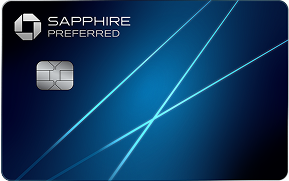

Chase Sapphire.
Two welcome offers.
Compare Preferred and Reserve, then view the offer through my Chase referral link.

Review each card’s current offer below.
The offer at a glance
| Card | Welcome points | Required purchases | Annual fee |
|---|---|---|---|
| Sapphire Preferred® | 75,000 | $5,000 within 3 months of opening | $95 |
| Sapphire Reserve® | 100,000 | $6,000 within 3 months of opening | $795 |
U.S. offer observed on the official referral page on October 19, 2026. Approval and bonus eligibility are determined by Chase. Review the current offer and pricing before applying.
https://www.referyourchasecard.com/19y/0OC4EPXU4L
Referral disclosure: I may receive a reward if you apply through this link and are approved for either card.
Before you apply
Holding the same card currently prevents a new application for it. Previous ownership, past welcome bonuses, and your history of opening or closing cards can affect bonus eligibility.
Review the full terms for your selected card: Preferred pricing & terms · Reserve pricing & terms.
How to use the referral
Follow the referral link
It opens Chase’s page showing both Sapphire options.
Choose your card
Read the live offer, eligibility and pricing on Chase.
Continue with Chase
Apply on Chase’s website. If approved and eligible, meet the stated purchase requirement to earn the bonus.
Good to know
Do I need an invitation code?
No separate code is supplied for this offer. Use the referral link above.
Does clicking the link count as an application?
No. This directory only links to Chase. You decide whether to apply on Chase’s website.
Can the offer change?
Yes. This page records what was displayed on the check date. The terms shown by Chase when you apply govern your application.